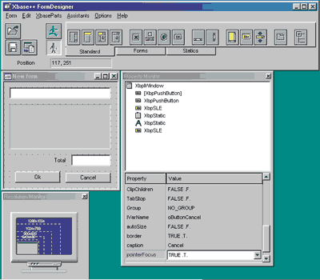
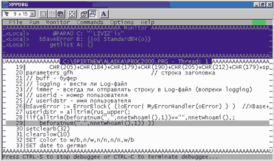
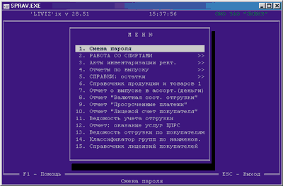

Александр Клечиков,
начальник отдела информационного обеспечения ЗАО "Ливиз"
alek@liviz.ru
Исторически сложилось так, что используемый в СУБД Clipper универсальный язык программирования, ориентированный на создание приложений баз данных, получил в нашей стране широкое распространение. У Clipper были определенные преимущества перед системами аналогичного назначения, такими как DBASE и FoxBase (впоследствии FoxPro), называемыми xBASE-системами. Во-первых, Clipper, в отличие от конкурентов, позволял создавать автономно работающие приложения (для сравнения: в DBASE, например, программа выполнялась в режиме интерпретации, что значительно уменьшало скорость работы приложения и заставляло использовать специальный runtime-модуль, интерпретировавший строки программы). Во-вторых, эта система была полностью открытой, что позволяло без труда подключать к программе модули, написанные на других языках программирования (C, ассемблер и т. д.). Успеху Clipper во многом способствовала и активная политика разработчика, фирмы Nantucket, на нашем рынке, включавшая техническую поддержку легальных пользователей по телефону, выпуск русскоязычного журнала по языку Clipper, проведение ежегодных конференций пользователей, организацию сертифицированных центров обучения, организацию и поддержку групп пользователей в регионах, выпуск русифицированных версий Clipper.
Преимущественное использование именно DOS-версии Clipper в России обусловлено как огромным парком устаревших персональных компьютеров в нашей стране, так и спецификой решаемых программистами задач, многие из которых не требуют графической операционной среды. В результате во многих организациях, ведущих с помощью компьютера складской, бухгалтерский и другие виды учета, накопилось много унаследованных учетных систем, реализованных в среде Clipper для DOS.
Предыстория
В конце 1992 г. отдел автоматизации систем управления производством (АСУП) питерского предприятия "Ливиз", одного из крупнейших производителей алкогольных напитков на территории России и стран СНГ, начал разработку собственных специализированных программ. В качестве СУБД и системы разработки был выбран пакет Clipper 5.01, лицензию на который поставила петербургская компания "Диалог-Инвест".
К середине 90-х годов в различных цехах и отделах завода накопилась масса различных пакетов прикладного ПО, реализованных на Clipper. Многократный ввод одних и тех же первичных данных в различные базы приводил к ошибкам, а отсутствие единого информационного центра не позволяло получать агрегирующую аналитическую отчетность верхнего уровня. Требовалось устранить разрозненность ПО, организовав единую информационную среду, состоящую из ПО собственной разработки и интегрированных в нее сторонних программных решений. Было решено сделать это с помощью все того же Clipper 5.01, поскольку предприятие уже имело значительное число Clipper-приложений, а специалисты заводского отдела автоматизации успели накопить большой опыт программирования на Clipper. Кроме того, практически во всех пакетах сторонних разработчиков, с которыми приходилось иметь дело заводу, также использовался Clipper, чьей мощности и функциональности достаточно для хранения и обработки корпоративных данных.
В ходе проекта была создана работоспособная многопользовательская сетевая среда с разграничением прав доступа вплоть до полей баз данных. В ней есть встроенный словарь всех корпоративных БД, а внешние интерфейсы интегрированы со средствами Microsoft Office. Система, сохранившая алфавитно-цифровой интерфейс, охватила снабжение, производство, сбыт и многие другие участки предприятия.
Выбор средства миграции
Завод имел работоспособную систему, однако уже было очевидно, что бесконечно использовать 16-разрядные приложения в 32-разрядных ОС, установленных на рабочих местах, неэффективно. Сказывались также некоторые ограничения Clipper, например, ограничение на количество элементов массива. Понадобилось средство, которое позволило бы эволюционным путем перевести существующие системы в 32-разрядную архитектуру, добавив впоследствии графический интерфейс и дополнительные функции, предоставляемые современными средствами разработки приложений.
Поставленным условиям наиболее полно удовлетворял продукт Alaska Xbase++ американской фирмы Alaska Software (http://www.alaska-software.com).
Alaska Xbase++ включает 32-разрядный компилятор для перевода Clipper-приложений в среду Windows и самостоятельный пакет разработки 32-разрядных Windows-программ, ориентированный на синтаксис языка Clipper. Таким образом, в Xbase++ есть все необходимое для создания профессиональных 32-разрядных Windows-приложений: язык программирования, компилятор, редактор связей, отладчик и дизайнер форм, обеспечивающий визуальное конструирование диалогов с возможностью доступа к данным из БД и генерацию исходных текстов (рис. 1), а также менеджер проектов и компилятор ресурсов. Для компаний, осуществляющих миграцию, очень важно, что в случае Xbase++ можно использовать существующие исходные тексты Clipper-приложений для их полного перевода в 32-разрядные инструкции Windows.
|  |
| Рис. 1. Дизайнер форм Xbase++.
|
Кроме того, разработчик Xbase++ предлагает продукт Alaska XbToolsIII - многоцелевую библиотеку, дополняющую Alaska Xbase++ и предназначенную для портирования программ на базе CA-Clipper Tools. Перевод на новую платформу DOS-приложения, использующего функции библиотеки CA-Clipper Tools, при наличии Alaska XbToolsIII в основном сводится к перекомпилированию. С помощью библиотеки XbToolsIII можно создавать блоки, позволяющие реализовать собственный план перехода от 16-разрядных приложений к 32-разрядным командам современных ОС - Microsoft Windows 95/98/NT/2000 и OS/2.
Партнер Alaska в России - компания "Клип Софт" (торговая марка Hot Soft, www.hotsoft.ru). Сотрудничество завода с ней началось с заключения договора о передаче полнофункциональной версии Alaska Xbase++ в комплекте с Alaska XbToolsIII для 30-дневного тестирования. В принципе первый из пакетов имеется в виде демо-версии на Web-сайте www.hotsoft.ru, но вот демо-версии Alaska XbToolsIII там нет, что не позволяет провести полнофункциональное тестирование приложений, активно использующих функции Clipper Tools.
Миграция
В первую очередь необходимо было перекомпилировать существующие приложения, полностью сохранив бизнес-логику и привычный для пользователей интерфейс. Обеспечиваемая Xbase++ преемственность формата хранения данных (DBF), а также механизма построения и поддержания индексов позволила заказчику одновременно работать с базами данных при помощи двух исполняемых модулей - Clipper и Xbase++, что существенно облегчило тестирование и позволило проводить миграцию параллельно с использованием старой системы, постепенно уменьшая долю ее использования.
На первом этапе миграции была проведена адаптация исходных кодов к различиям между Clipper и Xbase++, описанным в документации. Затем в процессе компиляции были обнаружены недокументированные, но весьма существенные отличия, речь о которых пойдет дальше. Чтобы выявить источники отличий, при модификации исходного кода активно использовался отладчик (рис. 2).
|  |
| Рис. 2. Отладчик XppDbg.exe.
|
Xbase++ позволяет выбрать любой из двух режимов пользовательского интерфейса - VIO (Video Input Output Mode) и GUI (Graphic User Interface). Режим VIO представляет собой текстовый интерфейс, функционирующий либо в полноэкранном режиме, либо в DOS-окне на экране Windows; GUI - стандартный графический интерфейс Windows-программ. Для упрощения перевода DOS-приложений, использующих режим VIO, в программу с GUI-интерфейсом Xbase++ также включает специальный "гибридный" (hybrid) режим, в котором базовые текстовые элементы программы могут быть объединены с графическими диалоговыми элементами. Это дает возможность поэтапно перевести DOS-приложение в полноценный графический пользовательский интерфейс. Разработчики из "Ливиз" решили применить "гибридный" режим, сохранив привычный для сотрудников "текстовый" интерфейс и дополнив его элементами управления мышью (рис. 3).
|  |
| Рис. 3. Пример пользовательского интерфейса.
|
Тестирование на первых порах велось силами двух сотрудников отдела информационного обеспечения (составлявшими костяк команды и на всех остальных этапах проекта), которые проверяли все пользовательские модули при помощи нового Xbase-приложения на действующих базах данных. Затем к тестированию были подключены наиболее квалифицированные пользователи. На экранах их компьютеров ярлыки, ссылающиеся на Clipper-приложение, были просто заменены ярлыками для Xbase-программы.
Процесс миграции вместе с этапом первичного тестирования был практически завершен в течение 30 дней, когда действовал договор о тестировании. По истечении этого срока, когда на практике подтвердилось, что пакет Xbase++ можно использовать для миграции без потери функциональности, был заключен договор о покупке компанией "Ливиз" пакета Alaska Xbase++ в комплекте с Alaska XbToolsIII.
Alaska Xbase++: отличия от Clipper
Рассмотрим некоторые существенные отличия Xbase++ от Clipper, которые пришлось учесть, чтобы обеспечить полноценное функционирование Clipper-программ, скомпилированных в Xbase++. По адресу http://www.hotsoft.ru/ALASKA/al_xb_clip.htm можно найти краткий обзор документированных отличий. Мы же остановимся на тех особенностях, которые оказались наиболее важными или не приведены в данном списке вовсе.
В Xbase++ функция DbEdit() реализована с помощью класса Tbrowse, и при добавлении записи с помощью функции пользователя возникает небольшая проблема. Clipper после добавления новой записи автоматически позиционирует на нее курсор, но Xbase этого не делает, поскольку переменная :rowPos автоматически не синхронизирует указатель текущей записи в источнике данных. В Xbase++ функция DbEdit() поставляется с исходными текстами (\XPPW32\SOURCE\SYS\dbedit.prg), что позволяет вручную справиться с данной проблемой. Необходимо заменить макроподстановку внутри кодового блока на макроподстановку от строки. Это связано с тем, что Xbase++ выполняет макроподстановку только во время выполнения кодового блока, в то время как Clipper делает это во время определения кодового блока.
Clipper
dbsetrelat(tm1[o],{|| &q})
Xbase++
dbsetrelat(tm1[o],&("{||" + q + "}"))
Далее отметим, что не все команды и функции работают в Xbase++ так же, как в Clipper. Так, CALL, LABEL FORM, DIR, REPORT FORM, SET FORMAT, SET FUNCTION, существующие в Clipper, в Xbase++ не поддерживаются. Если в Clipper имеется команда KEYBOARD Chr(0), то в Xbase++ Chr(0) игнорируется.
Функция STR(), например, воспринимает отсутствие необязательных входных параметров иначе, чем в Clipper.
Clipper
Str(919.99,0) возвращает 920
Xbase++
str(919.99,0) возвращает пустую строку
Функцию Keysend() рекомендуется заменять на PostAppEvent(), а LastKey() - на LastAppEvent().
Clipper
- iif(enterbeenden, keysend(KS_F10), keysend(KS_F4))
Xbase++
iif(enterbeenden, PostAppEvent(xbeK_F10), PostAppEvent(xbeK_F4))
Clipper
keysend(KS_F4+chr(lastkey()))
Xbase++
PostAppEvent(xbeK_F4)
PostAppEvent(LastAppEvent())
Функция CharRepl() неправильно заменяет некоторые буквы кириллицы.
? upper("АБВГДЕЁЖЗИЙКЛМНОПРСТУФХЦЧШЩЪЫЬЭЮЯ")
АЪВГОЕЁЖЗИЙКЛМНОПРСТУЩХЦЧШЩЪЫЬЭЮЯ
Интересное отличие было выявлено при тестировании. В качестве сетевой операционной системы в компании "Ливиз" используется Novell Netware 4.11. В папке на сервере, где расположены корпоративные базы данных в формате DBF, для пользователей средствами сетевой ОС была запрещена операция filescan. Из Clipper-приложений была возможна полноценная работа с базами данных, но вот выполнить какие-либо действия с файлами на уровне программы-оболочки пользователи уже не могли. Таким образом была реализована одна из составляющих защиты корпоративной информации. Однако после компиляции в XBase++ обнаружилось, что простая операция use lognameandpath alias logfile shared new возвращает код ошибки:
oError:description : File can not be opened oError:filename : oError:genCode : 71
Как выяснилось, Xbase++, в отличие от Clipper, требует операции filescan. Компания Alaska Software признала это различие в работе Xbase++ и Clipper и открыла в этой связи специальный раздел в своей базе знаний (PDR #4689), описание и текущий статус которого можно найти по адресу http://www.alaska-software.com/cgi-bin/waa1gate.exe?WAA_PACKAGE=PUBLICDTS&WAA_FORM=DISPLAYPDR&PDRID=4689. Автор будет признателен читателям, которые проголосуют по указанному адресу за приоритетность этой проблемы. В противном случае проблема будет "кочевать" из одной версии Xbase++ в другую.
Небольшая проблема была обнаружена при редактировании GET-объекта с использованием опции S
Из положительных моментов, облегчающих перенос программ, следует отметить, что все диалоговые функции, включая @ Say Get, Menu To и TBrowse(), готовы к работе с мышью. Для активизации процесса необходимо просто вставить в головную программу вызов функции SetMouse(.T.).
Наконец, обратим внимание на последовательность действий, которые необходимо выполнить для запуска скомпилированного Xbase++ приложения. Для работы приложения необходимы dll-библиотеки, расположенные в каталоге C:\ALASKA\XPPW32\RUNTIME\ (путь установки Xbase++ по умолчанию). Приложение ищет dll-библиотеки в следующем порядке: текущая папка, C:\WINDOWS\SYSTEM\, папки, перечисленные в переменной PATH.
Таким образом, для запуска приложения с рабочей станции пользователя, у которого
не установлен пакет Alaska Xbase++, необходимо выбрать один из следующих методов:
Автор выражает признательность ООО "Клип Софт" в лице Александра Есипова
и Ильи Максимова за помощь в подготовке статьи.
if valtype(edited)<>"C"
@ row(), col() get edited
else
@ row(), col() get edited picture @S<n>